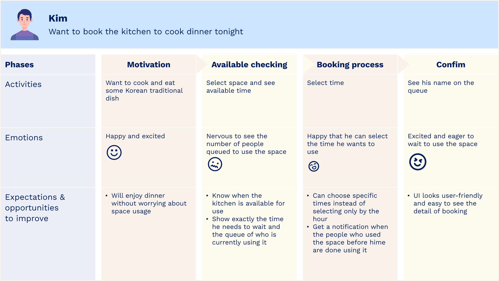
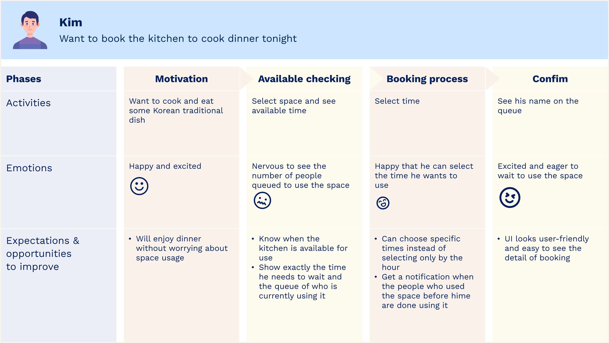
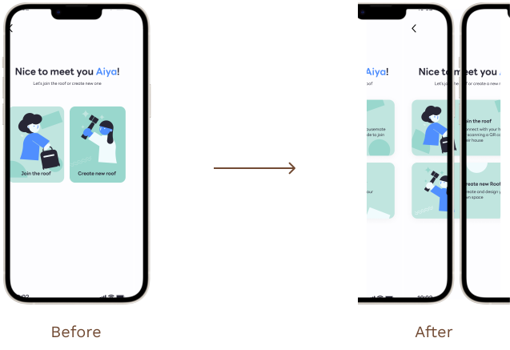

üí° Overview
Under the Roof is an application that I designed to help users who live together get along harmoniously. With the aim of creating peace and reducing conflicts related to shared living spaces.
I would like to enable users to use shared space in the house freely and plan their schedules effectively, even if they are not close with their housemates.
The inspiration for Under the Roof struck me during a visit to a bustling restaurant equipped with an efficient reservation system. Observing how I could reserve a table without enduring long queues sparked the idea of applying a similar solution to address challenges within shared living environments.
Role
UX/UI designer
Duration
4 Weeks
Platform
Mobile
Tools
Figma
üèÉ How did it start?
☄️ Problem
Before restarting, I conducted further research by reading blogs and comments on social media platforms about the problems faced by people living with housemates, with a focus on those residing in shared houses or apartments in Vancouver
Finding ⤵
- Conflicts arise when multiple housemates need to use the same space at the same time
- Some housemates tend to use shared spaces for long periods
- Some prefer to avoid communication with their housemates
- There is a desire to establish time rules regarding the use of shared spaces
üåü Solution
As a designer, my goal is to help users reduce conflict when they use shared spaces with their housemates by developing an application with a primary feature for booking queues in specific spaces within the house and also allowing users to add notes without needing face-to-face communication.
Also, users have the ability to customize or design their own space within the house and set specific times when they are allowed to use the shared space
üßë‚Äçüíº Persona
After understanding the users and defining the solution goal, I created Kim as a persona and mapped out his entire journey to provide a clearer visualization of who I was designing for and to identify opportunities for help. Kim is a reliable representation of my key user group for this application.
 

üìö Information Architecture
üöï User flow
üñçÔ∏è Sketching & Wireframe
After completing the sitemap and user flow, and understanding all aspects of the product's process, I translated my ideas into a digital wireframe. My focus was primarily on functionality and user-friendly design, while also considering the tone and visual style of my product at the same time.
üé® UI inspiration

üõ†Ô∏èDesign system
From my UI inspiration, I select mint and blue as my primary colors. However, I use light tones of these colors to prevent the design from appearing overly dull. Based on this choice, I selected typography that closely aligns with these tones and decided to stick to just one font to maintain simplicity.

üñºÔ∏èMock up


üß™Testing
After completing the design process, I conducted testing by interviewing three international students from Cornerstone college who live in shared houses in Vancouver. I assigned them five specific tasks to perform. Overall, during the tests, each user was able to complete some tasks without any interruptions, while others had suggestions, and a few experienced minimal breaks. However, there were instances where all three participants encountered confusion and halted progress at the same point.
Make changes ⤵
Task : Booking laundry space
All Participants had a short break between selecting 'Join the roof' and 'Create new roof' due to the use of the specific word 'roof,' which might have caused confusion. Therefore, I changed the button by adding a description.
Task : Create an account
All participants can complete this task easily, but two of them suggested that it would be better if they could see their name in the queue after booking more clearly. Therefore, I changed the color of the user's tab
Task : Add more space
All participants preferred having separate pages between the 'Edit Space' and 'Add Space' buttons. They also preferred clicking the 'Confirm' or 'Save' button rather than immediately viewing the results. Therefore, I separated these two pages, while users can still add more space from the 'Edit Space' page.
üóùÔ∏è Key takeaway
- Doing the crazy 8 exercise amazed me at how we could generate so many ideas in such a limited time, and I would love to do this exercise every time with my team before I start a project.
- This project marked my transition from working in a team to creating a stand-alone app independently. It highlighted the clear differences between collaborative work and solo endeavors. Working in a team made decision-making and voting much easier when unsure about which direction to take, as it allowed me to gain ideas and perspectives from others. It enabled me to understand the problem and find the best way to solve it before launching into real user testing.